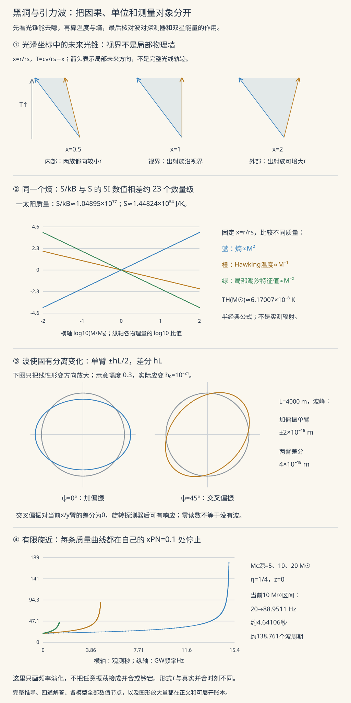

广相 III · 黑洞、引力波与宇宙学度规
对标：Carroll §5–8 精选 ｜ 前置：gr-01/02 广相收官三连：黑洞（视界不是墙是单行道）、引力波（度规的涟漪——线性化方程的辐射解，LIGO 的物理）、宇宙学度规（FRW——把整个宇宙当一个解，交棒 cosmo 线）。

1. 黑洞：视界的正确理解
Schwarzschild 坐标在 \(r = r_s\) 处"发散"是坐标病（换 Eddington–Finkelstein/Kruskal 坐标即光滑【引用】——曲率不变量 \(R_{\mu\nu\rho\sigma}R^{\mu\nu\rho\sigma} \propto r^{-6}\) 在视界处有限、只在 \(r = 0\) 真发散：奇点在中心，不在视界）。
视界的本性：\(r < r_s\) 内 \(g_{tt}, g_{rr}\) 变号——\(r\) 成为时间坐标：向 \(r = 0\) 的"前进"如同向明天前进一样不可拒绝（"落向奇点"是未来，不是方向）——单行道而非墙；自由落体者穿视界无局部异感（等效原理），远方观察者却看它红移冻结（gr-01 钟慢的极限）——两种叙事同真。
真实黑洞谱系：Kerr（自转——能层与参考系拖曳【引用】）；无毛定理（只剩 \(M, J, Q\)——"黑洞是最简单的宏观物体"）；天文身份证：X 射线双星、银心 Sgr A*（恒星轨道绕"看不见的 \(4\times10^6M_\odot\)"——诺奖 2020）、EHT 照片的亮环（\(\sim 5.2\,GM/c^2\) 的光子环 + ISCO 内缘，gr-02 例 2 的影像版）。
热力学一瞥（通往量子引力的窗）【引用】：面积定理（视界面积不减）↔ 熵增；Hawking 温度 \(T = \frac{\hbar c^3}{8\pi GMk_B}\)（太阳质量 ~\(10^{-7}\) K——观测无望但概念革命）；\(S = \frac{k_Bc^3A}{4G\hbar}\)——熵正比面积而非体积：全息原理的种子；信息悖论 = 量子引力的中心谜题（第三档"了望塔"的边界，如实标注）。
2. 引力波：度规的涟漪
线性化【骨架】：\(g = \eta + h\)（\(|h| \ll 1\)）代入场方程、选谐和规范（em-02 Lorenz 规范的引力版）：
——波动方程：引力扰动以光速传播；真空平面波解经 TT 规范剩两个物理自由度——两种偏振 \(h_+, h_\times\)（把圆环拉成十字/斜十字交替的椭圆——LIGO 臂长差的图案）。
四极辐射公式【引用 + 机理】：\(P \propto \frac{G}{c^5}\langle\dddot Q_{ij}^2\rangle\)——从四极起步（单极 = 质量守恒禁、偶极 = 动量守恒禁——ced-02 预告的兑现）；\(\frac{G}{c^5}\) 极小 ⇒ 只有致密天体的剧烈运动可测。证据链：Hulse–Taylor 脉冲双星轨道衰减与公式吻合 \(10^{-3}\)（间接，诺奖 1993）→ GW150914（直接，\(h \sim 10^{-21}\)：LIGO 4 km 臂变化千分之一质子直径——opt-01 Michelson 干涉的极限工程，诺奖 2017）→ GW170817 双中子星 + 电磁对应体（多信使天文元年：引力波速 = 光速验证到 \(10^{-15}\)、千新星 = 重元素工厂——atom-01"金子来自星体灾变"的观测闭环）。
波形三段：旋近（chirp——频率爬升给出"啁啾质量"）→ 并合 → 铃宕（黑洞的简正模——mech-04 的思想在时空本身上响一次）。
3. 宇宙学度规（交棒 cosmo）
宇宙学原理（大尺度均匀各向同性）唯一锁定 FRW 度规：
——全部动力学压进一个标度因子 \(a(t)\)（\(k = 0, \pm1\)：平/闭/开的空间几何——微分几何常曲率空间的三选一）。红移 = 波长随 \(a\) 拉伸 \(1 + z = \frac{a_0}{a}\)（不是多普勒是空间本身在长大）。代入场方程得 Friedmann 方程——cosmo-01 的开场白，本页只交钥匙。
4. 练习与要点
例 1（潮汐撕裂判据） 视界处潮汐 \(\sim \frac{GM}{r_s^3} \propto M^{-2}\)：恒星级黑洞在视界外把人"面条化"、星系级黑洞（\(10^9M_\odot\)）穿视界无感——越大的黑洞越"温柔"：反直觉一算便知。
例 2（chirp 质量读谱） GW150914 并合前 \(f \sim 150\) Hz、\(\dot f\) 读出啁啾质量 \(\mathcal M \approx 30M_\odot\)（四极公式反解【引用】）——从一段声频里称出黑洞体重：引力波天文的第一笔账。
例 3（视界熵的荒诞数量级） 太阳质量黑洞 \(S \sim 10^{54}k_B\) vs 太阳本身 \(\sim 10^{35}k_B\)——坍缩使熵暴涨 19 个数量级：宇宙的熵预算由黑洞统治（Penrose 的"为什么早期宇宙熵如此低"由此成为宇宙学最深问题之一，cosmo 线的暗线）。\(\blacksquare\)
下一门：量子信息三页——把 qm-03 的自旋 ½ 变成计算资源：叠加、纠缠、算法与纠错。